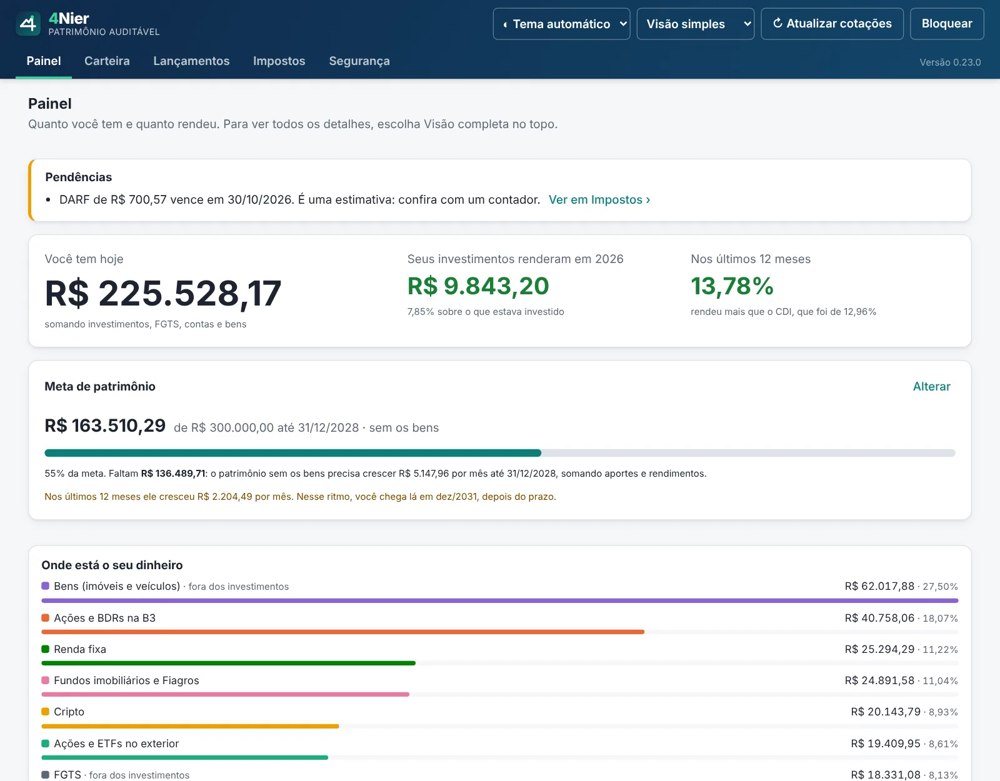
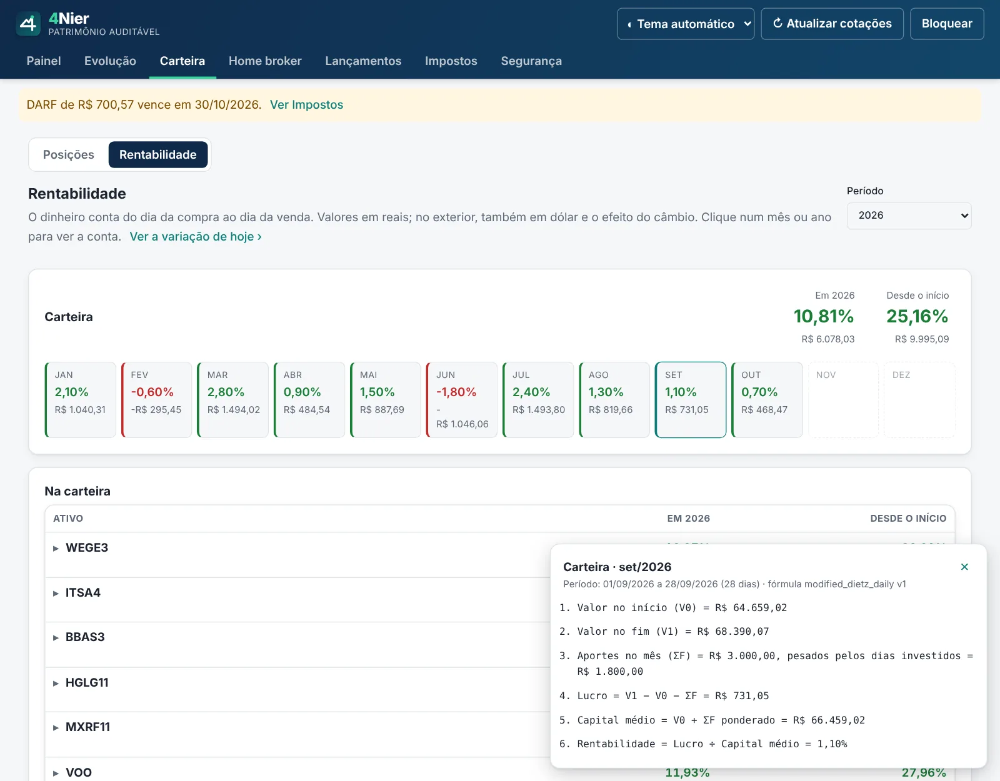
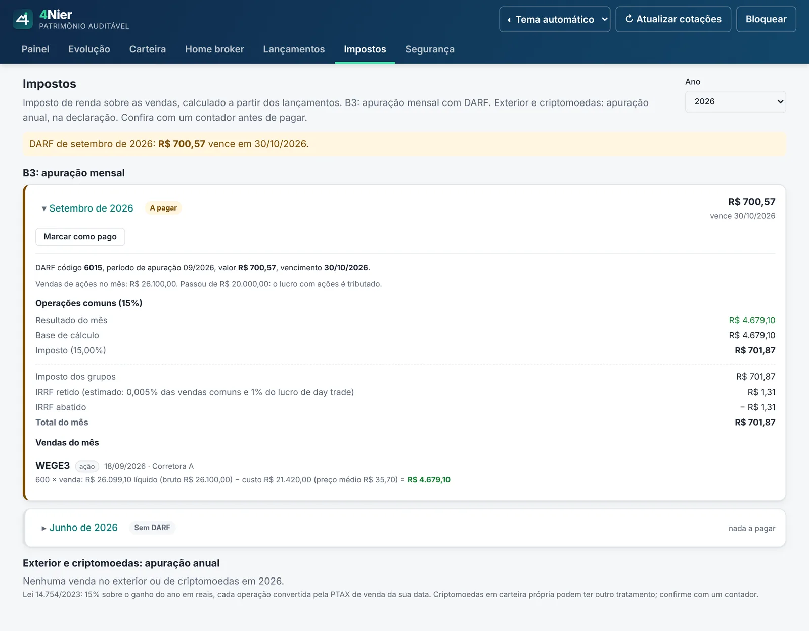
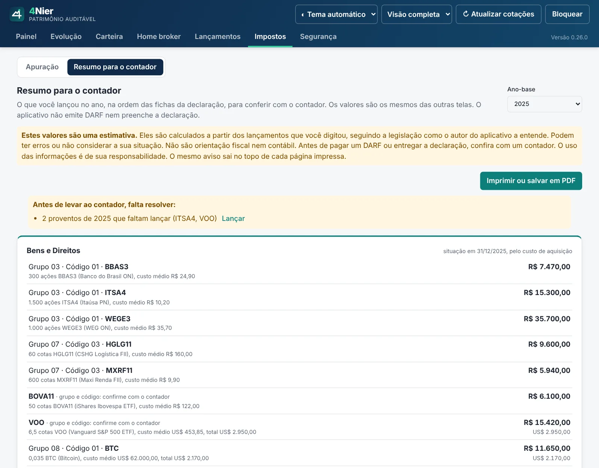
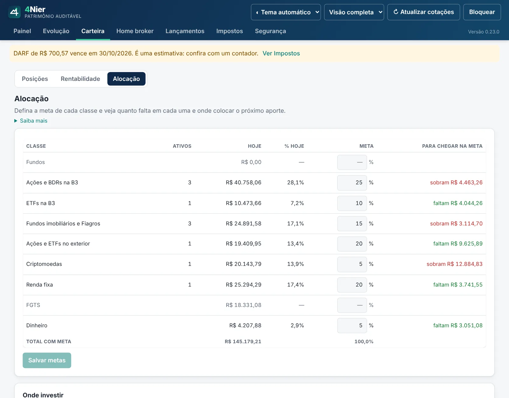
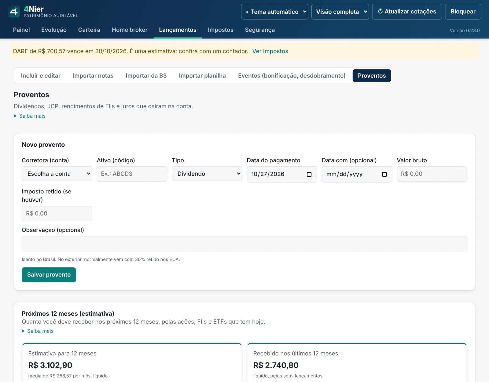
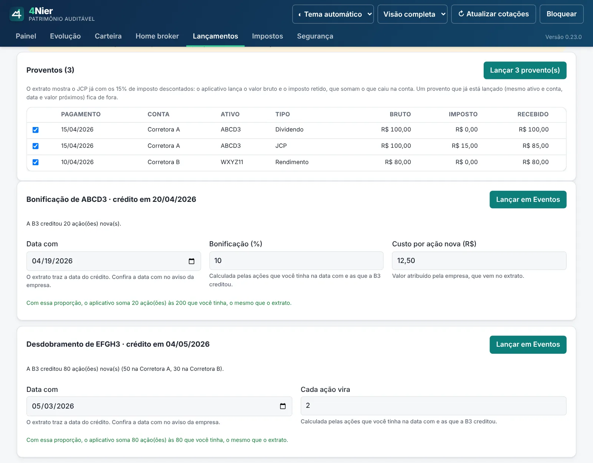
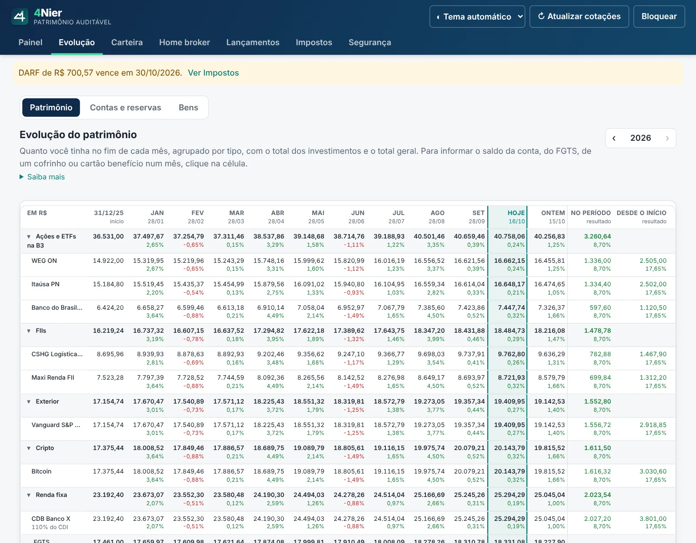

Por que usar
Feito por um investidor pessoa física que queria saber, de verdade, quanto rendeu o próprio dinheiro, sem entregar seus dados a ninguém.
Rentabilidade justa
Cada real conta do dia em que entrou ao dia em que saiu. Aportes no meio do mês não distorcem o resultado, e os dividendos, JCP e rendimentos de FIIs entram no rendimento do mês em que caem na conta. Compare com CDI, IPCA, Ibovespa, S&P 500 e dólar, veja onde pôr o próximo aporte para manter a alocação que você escolheu, acompanhe a sua meta de patrimônio e veja quanto deve receber de proventos nos próximos 12 meses.
Nada é caixa-preta
Ligue a memória de cálculo e clique num mês ou num ativo para ver a conta: valor inicial, aportes, cotação, câmbio do dia e a fórmula, com os valores no lugar. Cada lançamento mostra se veio da nota de corretagem, da planilha da B3 ou se foi digitado.
Imposto em dia
Apuração mensal da B3 com isenção de R$ 20 mil, day trade e prejuízo a compensar. Aviso de DARF a pagar, com código, valor e vencimento. No fim do ano, um resumo na ordem das fichas da declaração para levar ao contador.
Brasil e exterior
Corretoras do exterior e cripto convertidas pela PTAX do Banco Central de cada data, como pede a Lei 14.754. Ganho anual e custo em 31/12 para a declaração. Se quiser, veja a corretora pelo valor que chegaria no Brasil, já sem a taxa de conversão e o IOF.
Menos digitação
Importa os extratos da B3, com todas as corretoras de uma vez: compras e vendas pelo de negociação, e dividendos, JCP, bonificações e desdobramentos pelo de movimentação. Lê também notas de corretagem em PDF no padrão SINACOR e confirmações da Nomad, ou uma planilha CSV. Cotações, PTAX, cotas de fundos e preços do Tesouro são buscados sozinhos.
Privado de verdade
Roda no seu computador, num arquivo criptografado com a sua senha. Sem cadastro, sem servidor, sem anúncio. Todo o código é aberto para quem quiser conferir.
Por dentro
As telas abaixo usam dados fictícios.
Visão simples
Para quem quer só o essencial: quanto você tem, quanto os investimentos renderam no ano e se ganharam do CDI, em letras grandes. Troque para a visão completa quando quiser, no topo do app.

Carteira
Posição de cada ativo com preço médio, cotação do dia e resultado. O que está em dólar aparece também em reais. Ao abrir um ativo, você vê o ganho de cada compra que ainda está na carteira; na Evolução, a setinha ▸ do ativo mostra cada compra mês a mês.
Rentabilidade com a conta aberta
Mês a mês e desde o início. Com a memória de cálculo ligada (em Segurança), clique num mês para ver de onde saiu cada número.

Impostos
DARF de cada mês com a venda que gerou o imposto, a base de cálculo e o vencimento. Marque como pago e o aviso some.

Resumo para o contador
O ano na ordem das fichas da declaração: Bens e Direitos, rendimentos isentos, tributação exclusiva, renda variável e exterior. Antes, o que falta lançar. Imprima ou salve em PDF; o aviso de que é uma estimativa sai em cada página.

Alocação ideal
Defina a meta de cada classe e veja quanto falta em cada uma. Digite quanto vai investir e o app mostra onde colocar, sem precisar vender nada.

Proventos dos próximos 12 meses
Quanto você deve receber nos próximos 12 meses, pelo que cada ação, FII e ETF pagou por cota e pelas cotas que você tem hoje, já sem o imposto retido nos EUA. O app também mostra os proventos que faltam lançar, pelo histórico dos ativos que você teve, para lançar com um clique.

Proventos e eventos da B3 de uma vez
Com o extrato de movimentação da Área do Investidor, os dividendos, JCP e rendimentos entram de uma vez, e as bonificações e desdobramentos já vêm com a proporção calculada. O que já está lançado fica de fora.

Evolução do patrimônio
Quanto você tinha no fim de cada mês, por tipo de investimento, junto com FGTS, conta corrente, saldos em dólar e bens.

Como instalar
No Windows, o jeito mais fácil é a Microsoft Store: instala sem aviso de segurança e atualiza sozinho. Para Mac e Linux, ou se preferir o instalador, baixe o arquivo do seu sistema na página de versões. Esses arquivos ainda não têm assinatura digital paga, por isso o sistema mostra um aviso na primeira vez.
Windows 10 ou 11
- Recomendado: abra a página do 4Nier na Microsoft Store e clique em Obter. Pronto, não precisa dos passos abaixo.
- Ou baixe o arquivo que termina em -setup.exe.
- Abra o arquivo. Se aparecer "O Windows protegeu o computador", clique em Mais informações e depois em Executar assim mesmo.
- Siga o instalador e abra o 4Nier pelo menu Iniciar.
Mac
- Baixe o arquivo .dmg (serve para Mac Intel e Apple Silicon).
- Abra o .dmg e arraste o 4Nier para a pasta Aplicativos.
- Na primeira vez, clique no app com o botão direito e escolha Abrir. Se o Mac recusar, vá em Ajustes do Sistema › Privacidade e Segurança e clique em Abrir Mesmo Assim.
Linux
- Ubuntu, Debian e derivados: baixe o .deb e abra com a central de programas.
- Outras distribuições: baixe o .AppImage, marque como executável (botão direito › Propriedades › Permitir executar) e abra.
Antes de usar
O aplicativo ajuda a organizar, não substitui um contador. Os valores de imposto são uma estimativa, calculada a partir dos seus lançamentos e da legislação como o autor a entende. Podem ter erros ou não considerar a sua situação, e não são orientação fiscal nem contábil. Antes de pagar um DARF ou entregar a declaração, confira com um contador. O uso das informações é de sua responsabilidade.
Não é recomendação de investimento. Cotações e índices vêm de fontes públicas (B3, Banco Central, CVM, Tesouro Transparente, Nasdaq, Yahoo Finance e Coinbase) e podem atrasar ou faltar.
Guarde a chave de recuperação e faça cópias de segurança: sem a senha ou a chave, ninguém consegue abrir os seus dados, nem o autor.
Perguntas frequentes
É grátis mesmo?
Sim, para sempre. O código é aberto sob a licença GPL-3.0, não há versão paga, assinatura nem anúncio.
Meus dados vão para algum servidor?
Não. Tudo fica num arquivo criptografado no seu computador. O aplicativo só acessa a internet para baixar cotações, PTAX, cotas de fundos e preços do Tesouro, sem enviar nada seu.
Como atualizo para uma versão nova?
Quando sai uma versão nova, o aplicativo, no Windows, no Mac ou no Linux, mostra um aviso no topo com o botão "Atualizar agora". Ele baixa o instalador daqui, confere a assinatura do projeto, instala por cima e abre de novo, com os seus dados no mesmo lugar. Se preferir, baixe na página de versões e instale por cima. Quem instalou pela Microsoft Store recebe as atualizações pela própria loja.
Já uso o instalador. Vale trocar pela Microsoft Store?
Não precisa: as duas versões são o mesmo aplicativo. Se quiser trocar, saiba que a versão da loja guarda os dados numa pasta separada. Faça um backup na versão que você usa hoje (Segurança › Backup), instale pela loja, use "Restaurar um backup" na tela de entrada e depois desinstale a versão antiga.
O app faz a minha declaração?
Não. Em Impostos › Resumo para o contador, ele junta o que você lançou no ano na ordem das fichas da declaração (Bens e Direitos, rendimentos isentos, tributação exclusiva, renda variável e exterior) e mostra o que falta lançar. Dá para imprimir ou salvar em PDF e levar ao contador. Os valores são uma estimativa: o app não emite DARF nem preenche a declaração.
Preciso digitar o saldo do CDB todo mês?
Não. Cadastre o CDB, a LCI ou a LCA em Evolução › Contas e reservas com o valor aplicado, a data e a taxa (102% do CDI, 12% ao ano ou IPCA + 6%). O app calcula o saldo todo dia pelo CDI e pelo IPCA do Banco Central, mostra quanto sobraria já sem o IR e, no vencimento, tira o valor da carteira. Se você informar o saldo do extrato, ele vale mais que o calculado.
Os proventos entram na rentabilidade?
Sim. Dividendos, JCP e rendimentos de FIIs contam no rendimento do mês em que caem na conta, pelo valor líquido. O valor do patrimônio não muda: o provento só deixa de aparecer como dinheiro que entrou e passa a aparecer como rendimento dos investimentos, sem contar duas vezes. No Painel, o rendimento do ano mostra quanto veio da variação de preço e quanto veio de proventos.
Como fica a LGPD?
O aplicativo não coleta nenhum dado seu: não tem cadastro, servidor, anúncio nem rastreador, e o autor não recebe dado de ninguém. Na internet, ele só consulta dados públicos de mercado (B3, Banco Central, CVM, Tesouro, Yahoo Finance, Coinbase e Nasdaq), enviando códigos de ativos, CNPJ de fundos e datas, nunca nome, CPF ou valores. Ao abrir, ele também pergunta ao GitHub qual é a versão mais recente, para avisar de atualização (dá para desligar em Segurança); em "Atualizar agora", ele baixa do GitHub o instalador assinado da versão nova. Esta página fica no GitHub Pages, que registra acessos conforme a política de privacidade do GitHub.
Como apago meus dados?
No aplicativo, em Segurança › "Apagar perfil e todos os dados" (pede a senha). No Windows, ao desinstalar, marque "Apagar também meus dados". No Mac e no Linux, apague a pasta io.github.marcelofournier.carteiraauditavel em ~/Library/Application Support (Mac) ou ~/.local/share (Linux). Backups que você salvou em outro lugar ficam onde estão.
Como o app converte o dólar?
Nos impostos, sempre pela PTAX de venda do Banco Central de cada data, como exige a Lei 14.754/2023. No resto do aplicativo também vale a PTAX, a não ser que você informe o custo da corretora para trazer o dinheiro ao Brasil (na Nomad, conversão de 1% + IOF de 0,38%). Aí o saldo dela aparece pelo valor de resgate: o dólar comercial do dia menos essas taxas, o que chegaria de fato na sua conta. As compras também entram pelo valor de resgate do dia em que foram feitas, então o ganho é o que você teria a mais em reais depois de trazer o dinheiro. A conta completa aparece na Carteira e num ⓘ ao lado de cada valor.
Onde fica o dinheiro parado na corretora do exterior?
Em Evolução › Contas e reservas, como "Saldo em dólar". Você digita o saldo em US$ como aparece no app da corretora e pode ter mais de um por corretora, cada um com o seu nome (na Nomad, por exemplo, a conta investimento e a conta global). O app converte pelo valor de resgate da corretora, ou pela PTAX se você não informou o custo para trazer o dinheiro. O saldo conta no patrimônio, não na rentabilidade, e nos impostos aparece em dólar vezes a PTAX de 31/12.
Preciso lançar todo o meu histórico?
Não. Ao criar um perfil, o app pergunta o que você tem hoje em cada corretora, com a quantidade e o preço médio, e lança tudo de uma vez. Se quiser, depois você traz o histórico com o extrato de negociação da B3 ou com as notas antigas.
E se o computador quebrar?
O app faz um backup automático por semana, mas ele fica no mesmo computador. Por isso, em Segurança › "Fazer backup agora", salve uma cópia num pendrive ou no seu Google Drive ou OneDrive. O arquivo continua criptografado pela sua senha. Se passar 30 dias sem esse backup, o app avisa.
Tem versão para celular?
Não, de propósito. Os dados ficam só no computador, sem nuvem, o que reduz o risco de vazamento.
Quais corretoras são lidas automaticamente?
Notas em PDF no padrão SINACOR, usado pela maioria das corretoras brasileiras, e as confirmações da Nomad. Para as outras, use a planilha CSV ou lance à mão.
Como sei se um lançamento veio da nota ou foi digitado?
Em Lançamentos, abaixo do tipo de operação, aparece a origem: "Nota" com a corretora e o número, "Planilha da B3", "Planilha importada" ou "Digitado". Se um lançamento importado foi alterado depois, aparece também "alterado depois", e o que mudou fica registrado em Segurança › Auditoria. Isso vale também para os lançamentos antigos.
Dá para trazer todo o histórico da bolsa de uma vez?
Sim. Na Área do Investidor da B3, abra Extratos › Negociação, escolha o período e baixe em Excel. Em Lançamentos › Importar da B3, o app lê as compras e vendas de ações, FIIs e ETFs de todas as corretoras e calcula as taxas. Dias que já foram lançados por nota de corretagem ficam de fora. Para os proventos, baixe também Extratos › Movimentação: o app lança de uma vez os dividendos, JCP e rendimentos que caíram na conta (os já lançados ficam de fora) e leva as bonificações e desdobramentos para Eventos, com a proporção calculada. Os arquivos são lidos só no seu computador.
O app é complicado para quem está começando?
Não precisa ser. Na visão simples, o Painel mostra só quanto você tem, quanto rendeu no ano e se ganhou do CDI, e a Carteira mostra cada ativo com o valor de hoje e o ganho desde a compra. O primeiro uso pergunta qual visão você prefere, e dá para trocar quando quiser no topo do app.
Encontrei um erro. Como aviso?
Abra um relato de problema no GitHub (é preciso uma conta gratuita). Nunca anexe notas, extratos ou dados pessoais: descreva o caso com valores fictícios.